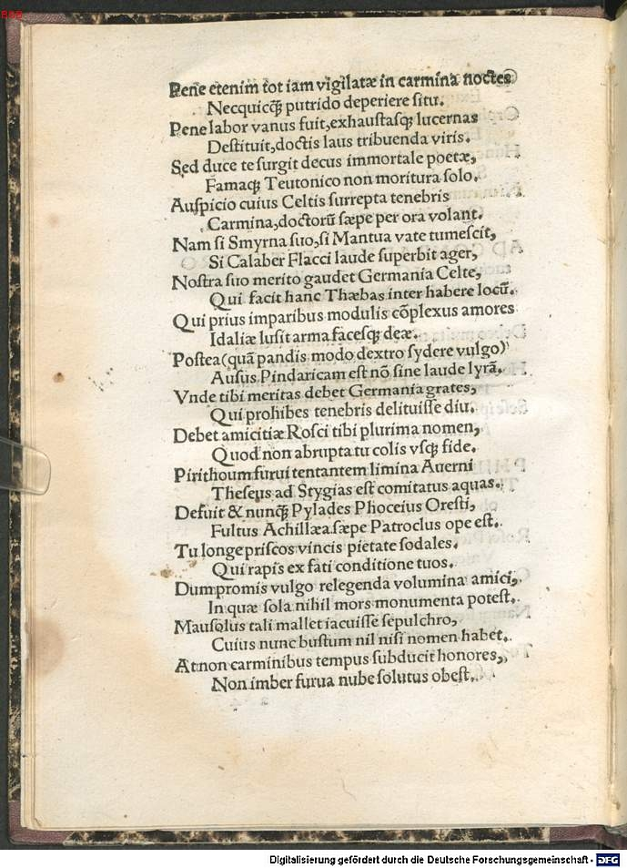
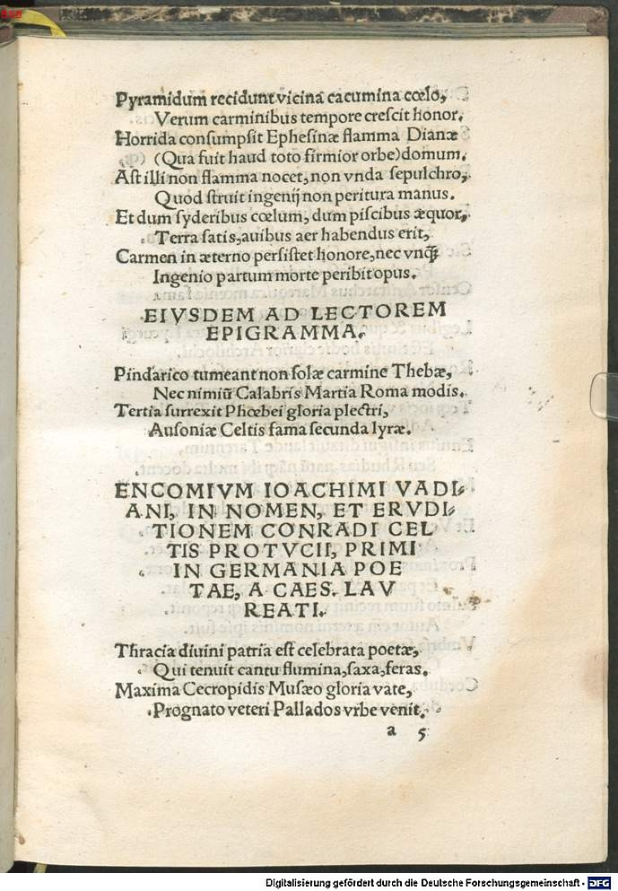
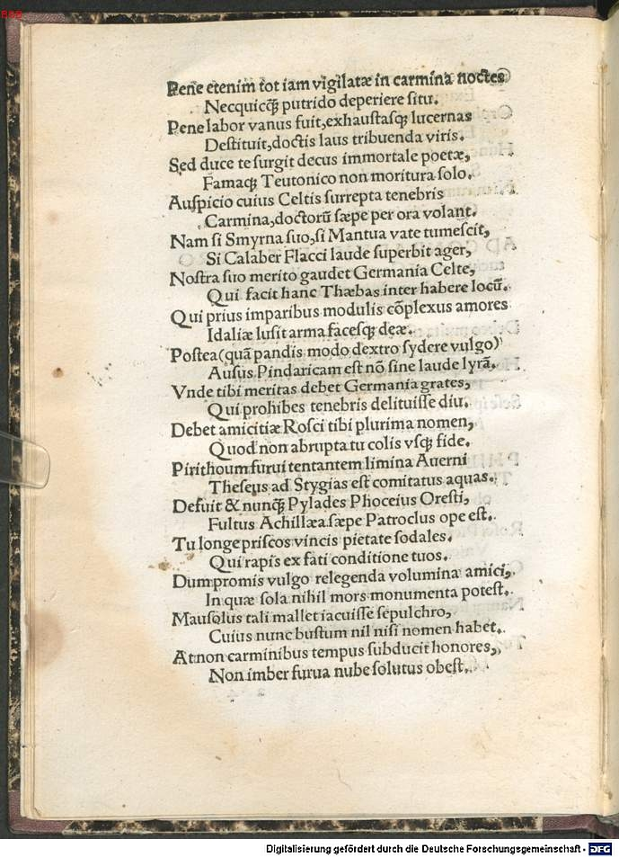
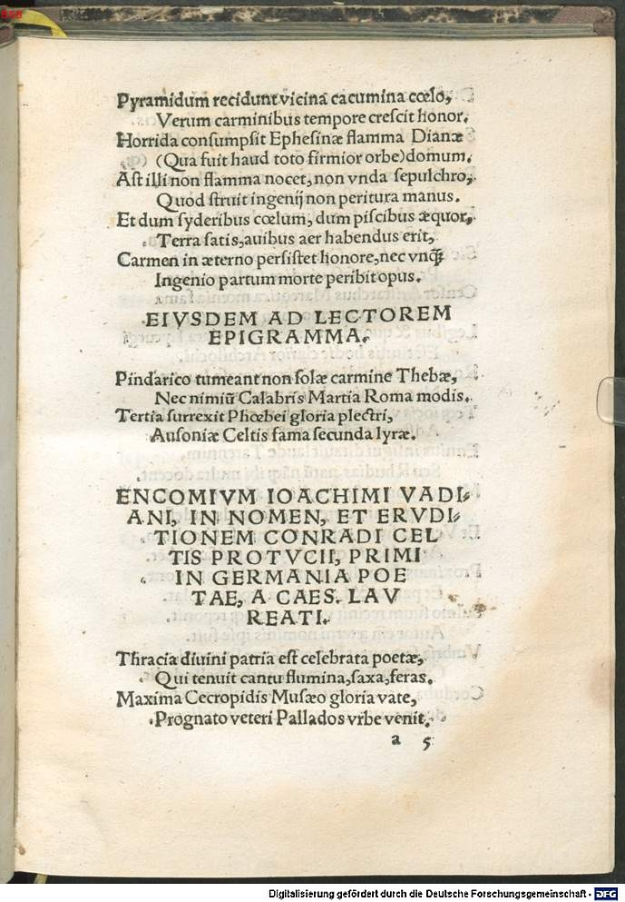

Celtis 7 (Philipp Gundel)
Faksimile
 



Transkription
Philippi Gundelii Boii, ad Thomam Roscium, Poetam laureatum, Eligidion, ob editionem Odarum Conradi Celtis Protucii
Rosci Pierios inter doctissime vates,
Unica Germanae fama, decusque plagae.
Qui firmi sacrum et venerabile nomen amoris
Non pateris fati succubuisse manu.
Namque licet rapidae defunctus munere vitae,
Secessus ierit Celtis ad elisios.
Tu facis ut vitae meliori parte supersit,
Effugiantque malos carmina culta rogos.
Paene etenim tot iam vigilatae in carmina noctes
Necquicquam putrido deperiere situ.
Paene labor vanus fuit, exhaustasque lucernas
Destituit, doctis laus tribuenda viris.
Sed duce te surgit decus immortale poetae,
Famaque Teutonico non moritura solo.
Auspicio cuius Celtis surrepta tenebris
Carmina, doctorum saepe per ora volant.
Nam si Smyrna suo, si Mantua vate tumescit,
Si Calaber Flacci laude superbit ager,
Nostra suo merito gaudet Germania Celte,
Qui facit hanc Thebas inter habere locum.
Qui prius imparibus modulis complexus amores
Idaliae lusit arma facesque deae.
Postea (quam pandis modo dextro sidere vulgo)
Ausus Pindaricam est non sine laude lyram.
Unde tibi meritas debet Germania grates,
Qui prohibes tenebris delituisse diu.
Debet amicitiae Rosci tibi plurimae nomen,
Quod non abrupta tu colis usque fide.
Pirithoum furvi tentantem limina Averni
Theseus ad Stygias est comitatus aquas.
Defuit et numquam Pylades Phoceius Oresti,
Fultus Achillaea saepe Patroclus ope est.
Tu longe priscos vincis pietate sodales.
Qui rapis ex fati conditione tuos.
Dum promis vulgo relegenda volumina amici,
In quae sola nihil mors monumenta potest.
Mausolus tali mallet iacuisse sepulchro,
Cuius nunc bustum nil nisi nomen habet.
At non carminibus tempus subducit honores,
Non imber furva nube solutus obest.
Pyramidum recidunt vicina cacumina caelo,
Verum carminibus tempore crescit honor.
Horrida consumpsit Ephesinae flamma Dianae
(Qua fuit haud toto firmior orbe) domum.
Ast illi non flamma nocet, non unda sepulchro,
Quod struit ingenii non peritura manus.
Et dum sideribus caelum, dum piscibus aequor,
Terra satis, avibus aer habendus erit,
Carmen in aeterno persistet honore, nec umquam
Ingenio partum morte peribit opus.
Übersetzung
Eine kleine Elegie des Boier Philipp Gundel an den gekrönten Dichter Thomas Resch wegen der Herausgabe der Oden des Konrad Celtis Protucius.
Resch, gelehrtester unter den pierischen Sängern, einzigartiger Ruhm und Zier der deutschen Länder. Der du es nicht erduldest, dem heiligen und verehrungswürdigen Namen starker Liebe durch die Hand des Schicksals zu erliegen. Denn wenn Celtis, mit dem Geschenk eines raschen Lebens gestorben, zu den elysischen Gefilden, den verborgenen, gegangen ist, dann bewirkst du, dass <er> mit dem besseren Teil seines Lebens überbleibt und dass seine gebildeten Lieder den üblen Scheiterhaufen entkommen. Denn fast hätten <ihn> so viele für die Lieder durchwachte Nächte dem faulen Moder erfolglos entrissen. Fast wäre die Mühe vergeblich, <fast> hätte sie die erschöpften Lampen im Stich gelassen, gelehrten Männern muss man Lob zugestehen. Aber unter dir als Anführer erhebt sich die unsterbliche Zierde des Dichters und ein Ruhm, der auf deutschem Boden nicht sterben wird. Unter dessen Befehl fliegen die Lieder des Celtis, der Finsternis entrissen, oft durch die Münder der Gelehrten. Denn wenn Smyrna und Mantua vor Stolz über ihre Sänger anschwellen, wenn sich der kalabrische Acker des Lobs seines Flaccus brüstet, dann erfreut sich unser Deutschland an seinem verdienten Celtis, der dafür gesorgt hat, dass <auch> dieses neben Theben seinen Platz hat. Dieser erzählte zuerst die Liebesgeschichten mit ungleichen Verslein und besang im Spiel die Waffen und Fackeln der Göttin vom Idagebirge. Danach wagte er sich an die pindarische Lyra (die du dem Volk gerade unter einem glücklichen Stern verkündest) - nicht ohne Lob. Deshalb schuldet dir Deutschland verdientermaßen Dank, der du verhinderst, dass es lange in der Finsternis versteckt bleibt. Das Wort Freundschaft, Resch, ist dir am meisten schuldig, weil du sie fortwährend pflegst, ohne dass dein Vertrauen abbricht. Theseus hat Pirithous, der die Schwelle des dunklen Avernersees anstrebte, zu den stygischen Wässern begleitet. Auch fehlte Orestes niemals der Phoker Pylades, oft wurde Patroclus von der Hilfe Achills untersützt. Du übertriffst die altehrwürdigen Gefährten an Pflichtgefühl bei Weitem, der du die Deinen aus der Lage des Schicksals entreißt, während du dem Volk die Bücher <deines> Freundes hervorholst, um sie wieder zu lesen, Monumente, gegen die der Tod alleine nichts <ausrichten> kann. Mausolus würde lieber in einem solchen Grabmal liegen, dessen Grab jetzt nur mehr seinen Namen hat. Aber nicht entreißt die Zeit den Gedichten ihre Ehren, nicht schadet <ihnen> der Regen, der sich aus der dunklen Wolke gelöst hat. Die Gipfel der Pyramiden, nahe dem Himmel, verfallen, aber den Gedichten wächst die Ehre mit der Zeit. Die schreckliche Flamme verzehrte das Haus der Diana von Ephesos (auf der ganzen Welt gab es kein standfesteres). Aber jenem schadet keine Flamme, keine Welle im Grab, was die Hand eines Talents errichtet hat, die nicht vergehen wird. Und solange der Himmel von Sternen, solange das Wasser von Fischen, die Erde von Saaten und die Luft von Vögeln bewohnt wird, solange wird das Gedicht in ewiger Ehre fortbestehen und niemals wird das durch Talent geborene Werk durch den Tod vergehen.
Metadaten
| Titel des Gedichts: | Philippi Gundelii Boii, ad Thomam Roscium, Poetam laureatum, Eligidion, ob editionem Odarum Conradi Celtis Protucii |
| Autor der Gedichts: | Philipp Gundel (Philippus Gundelius) |
| Containerwerk: | Conradi Celtis Protucii, primi in Germania poetae coronati, libri Odarum quattuor, cum Epodo, et saeculari carmine diligenter et accurate impressi, et hoc primum typo in studiosorum emolumentum editi, Straßburg 1513 |
| Autor des Containerwerks: | Konrad Celtis (Conradus Celtis) |
| Gattung des Containerwerks: | Lyrik, Oden, Epoden, Carmen saeculare |
| Erscheinungsjahr: | 1513 |
| Verschlagwortung: | Elegie, Tod, Nachruhm, kurzes Leben, Unsterblichkeit, Dichtung, Nationalstolz, Horaz, aemulatio, Freundschaft, Resch, Theseus, Orestes, Achill, Monument, Grab |